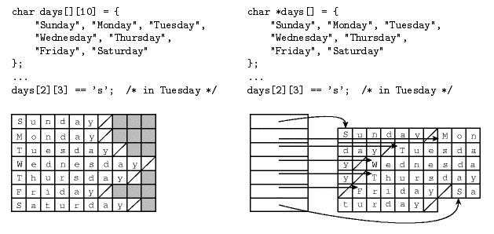

Type Systems
Spring 2013
The Definition of Types: 3 POV
- denotational
pov:
- constructive
pov:
- abstract based pov:
- programmer's pov: a mixture of these pov.
Classification of Types
Simple types:
Predefined types used to construct all other types
Discrete Types: Enumerated and Subrange Types
- Enumerated types consist of a set of named elements.
- Various languages (Pascal, Ada, Modula-2, C++) allow
users to
define enumerated types:
TYPE
Traffic_signal IS (Red,
Green);
TYPE Rainbow
IS (Red, Orange,
Yellow, Green, Blue, Violet);
- This is
Ada, Pascal will not
allow Red and Green to appear in two enumerated types.
SUBTYPE
Brighter IS Rainbow
RANGE Red..Yellow;
- It is
obvious to the compiler
that
Red is of type Rainbow.
- Enumerated types have Predecessor and Successor
functions
provided in the language and, in some cases, other functions:
Rainbow’SUCC(Green) is Blue
Rainbow’PRED(Yellow) is Orange
Rainbow’LAST is Violet
Rainbow’FIRST is Red
- Maximum value for integers
ADA: Integer’LAST
Pascal: MAXINT
Java: java.lang.Integer.MAX_VALUE
C : <Limits.h>
- C: enums
are basically a way to alias names to integers
- C++: enums
define an actual type
- Java 5 has "linguistic support" for enum
types.
- enum
( Language Specification 3rd ed)
- enums
have methods and state
Subsets/subranges
- Languages can provide subranges of scalar types
- Pascal and Modula-2
TYPE Uppercase =
‘A’..‘Z’ ;
- Ada also allows subtypes or new types
- SUBTYPE Myrange is Integer RANGE 10.
. 100
- TYPE
Mytype is NEW Integer RANGE 10. . 100
- X : Myrange;
- Y : Mytype;
- Z : Integer;
- legal: Z := X; X := Z; (if
Z in the
range of X)
- not legal: Z := Y;
- The range portion is called a type constraint
- Myrange is a constrained subtype
- Mytype is called a derived type.
Composite, or
constructed type
- Grouping of elementary data elements
- Aggregate of heterogeneous types
- Records
- Aggregate of homogeneous types
- Arrays
- Aggregate of aggregates
- linked lists
Records:
- C provides structs :
struct Rec {
int x;
int y;
char a;
float f;
}
Declaration and Initialization
struct Rec var = { 1; 1; 'a'; 1.2 };
- Java: does not have structs
- Classes without methods can be viewed as records.
- C++:
structs may have methods
- C#: structs
may have methods
- structs are value
types vs classes
which are
reference types
- Ada records:
TYPE Emp_name_typ IS RECORD
First : String(1..20);
Middle : String(1..10);
Last : String(1..20);
END RECORD;
TYPE
Emp_rec_typ IS RECORD
Emp_name : Emp_name_typ;
Hourly_rate : Float;
END RECORD;
Employee_record :
Emp_rec_typ;
- Haskell example:
data People = Person String Int
- People
is
the type name
Person is the constructor
How are records stored in memory
and what are offsets? - Initialization
Type Checking
- Compiled languages usually do as much type checking as
possible before running the program. (Static type checking).
- Some languages must include tables in the run-time
environment for dynamic type checking.
Issue for statically typed
languages
- type equivalence
- type compatibility
- type inference
When are two types the
same? -- Type
Equivalence
- To have compatibility we use subtypes,
e.g.
subtype S is T1 range 2..5
Beware of anonymous types in Ada:
- Variable declarations of arrays and tasks (without
giving a
name to the corresponding type) may create anonymous type that are
different each time: (Ada)
x, y: array(1..9) of integer;
is equivalent to:
type internal_type1 is array (1..9) of integer;
type internal_type2 is array (1..9) of integer;
x: internal_type1;
y: internal_type2;
- x and y have different internal names.
- Therefore have different types. So x := y is illegal.
C
- In C, structural equivalence is used, except
for
struct’s,
where name equivalence is used.
- Note: typedef
does not create a new type.
- Java uses name equivalence.
Sometimes called
Declaration Equivalence
- The follow would be considered
equivalent
(as in some Pascal implementations):
x,y: array[1..10] of
record a : integer;
b : char
end;
- The use of typedef
in C introduces a new
name
for the same type.
typedef char *str;
str p;
char *q;
p and q have the
same type.
Type Checking
- Compiled languages usually do as much type checking as
possible before running the program. (Static type checking).
- Some languages must include tables in the run-time
environment for dynamic type checking.
- Are the types equivalent/compatible?
- Ada has to do run-time constraint checking.
type T1 is range 1..99;
subtype S is T1 range 1..9;
X : T1;
Y : S;
begin
Y := 6;
X := 2 * Y;
Y := X;
this causes a run-time exception.
Type Compatibility
- Not all languages require type
equivalence in
every context
Coercion
- Automatic conversion
- Ada require explicit conversion which is like casting in
C
(Java/ C++)
- Haskell has several overloaded functions that serve as
explicit
coercions:
- fromInteger, fromRational, toInteger, toRational,
fromIntegral, fromRealFrac, fromIntegral, fromRealFrac
- fromInteger and fromRation are implicitly used to
provide
overloaded numeric literals:
- 4.5 + 6 in most languages is probably 4.5 + 6.0
- + is usually an overloaded operator, adding integers or
reals
(floats)
- Usually addition of reals
- The Louden describes a PL/I’s problem: (Rule:
fractional value’s
precision must be maintained.)
1/3 + 15 returns 5.33333333333333
- Type widening is more natural than type
narrowing in
general.
- type widening
- int to real
- 2-byte int to 4 byte int
- type narrowing
- real to int
- Java uses the terms numerical
promotion and widening conversion
- APL uses promotion to
means coercion from a scalar
to
an aggregate
- What do you think this means?
- The programmer should be aware:
- No standard definition for such terms
- The same code is executed for different types
- The primitive type is changed and stored in a
temporary
location for use.
- Casting
- In C++ the term cast refers
to four different kinds of explicit type conversion
- static_cast:produces
a new
value "equivalent" to the original.
- double
x = static_cast
3;
- same
a C cast
- dynamic_cast:a
run-time
type-checked conversion of a pointer.
- Parent * p = new Child; //up cast
- Child * c = dynamic_cast<Child *>
p; //downcast
- Value is 0 if the conversion is invalid
- reinterpret_cast:
produces no
new values; merely changes the set of functions that can be applied to
the original value
- few reinterpret_casts are portable
- completely unchecked
- const_cast:
removes const protection from a parameter
Sequence data types:
Arrays
Legal subscripts types:
- C, C++, Java indexes are always integers starting at
0.
- FORTRAN 77, FORTRAN 90 uses integers. The
lower
bound
default if 1.
- Pascal allows any ordinal type to be an index.
type WkE = (Sat, Sun);
Costs = array[WkE] of real;
- Ada allows any discrete type (page 153) to be an
index.
- Integers, Booleans and characters are examples of discrete
types ( also called ordinal types).
- Unconstrained 2-dimensional array
TYPE Matrix_type IS
ARRAY(Integer range <>,
Integer range
<>) OF Integer;
- Elaboration
- Constrained 2-dimensional array
TYPE Matrix_4x4_type IS
ARRAY(1..4, 10..13) OF Integer;
- If the arrays are allocated during compile time then
the
range is statically bound.
- Fortran 77
- Global or automatic array (value model) variable
in C:
int arr [ 40 ];
- Range bound static, storage ?
- Automatic
Arrays (variable
length
arrays) declared in C functions:
void cFunction (int size ) {
int marbles [size][size/2];
}
- Range bound dynamic, storage dynamic
- Prior to C99 this code would not compile.
- Prior to C99: When multidimensional arrays are
used, it
is necessary to specify the bounds of but the first dimension.
When and where does
array allocation
take place?
- If the arrays are allocated from the heap
then both
the
storage allocation and the subscript ranges can be dynamically bound.
- Java: reference model
- Storage only on the heap
- Arrays are objects
String [ ] sArray = new String[5];
Object [ ] myArray = new Object
[sArray.length];
- Java does do range checking. All arrays
have a field
length that never changes.
- C, C++ can also dynamically allocate storage from the
heap.
- C, C++ does not do range checking.
- Perl:
- variables names for arrays begin with "@"
- storage is dynamically allocated
- example:
@myPerlarr = ("one","two","three");
$myPerlarr[0] is the
scalar with value "one"
@myPerlarr[26] = "wow";
- Extends the array to length 26.
How is the array
stored in
memory? Runtime calculation of array element.
Computing
effective
address:
- Arrays in most language implementation are stored in
contiguous location in memory.
- Some languages arrays of arrays.

- Left declaration is a true two-dimensional array.
- Right declarations is an array of pointers to
array of
chars.
- What are the trade offs?
The key feature of arrays is O
(1) access
time
to any array element.
Formula for computing the effective address of a one
dimensional array:
A: array [LowerBound .. UpperBound]
Let ba be the base address of
array A, and
Let size be the number of
addressable
units(bytes)
required to store a value of base type of A.
Then the effective address of A[k]
is:
ba + size *
(k - LowerBound of A)
As you can see the cost of computing A[k]
is independent of k.
Multidimensional arrays: Where does the
second
element of the array go?
A: array [LowerBound .. UpperBound ] of
array
[1..4]
of char
Row-major
-- Rows are contiguous in memory A[2,4] is followed by A[2,5]
Column-major major columns are contiguous, A[2,4] is
followed by A[3,4]
Fortran uses Column major most languages uses row major --
What is the implications for porting code? (Cache?, program correctness?)
Can arrays be initialized when they have their storage
allocated?
- Initialization: In FORTRAN, Java, C and Ada, arrays
can be
initialized in their declaration.
- Forcing a “2 dimensional” array
representation with
initialization in Java:
double[ ] [ ] identity = {
{ 1.0, 0.0, 0.0 },
{ 0.0, 1.0, 0.0 },
{ 0.0, 0.0, 1.0 }
};
- Note: "global" variables in Java are initialized
(0,nil)
but NOT local variables.
Haskell, Prolog
- Do not have arrays.
- lists are the way
to sequence data.
- How are lists different from arrays?
- Programming in C++, C# and Java you should use collection
frameworks provided in the languages.
Pointers:
- C, C++ pointer types
- int * x;
- float * y;
- the R-value is an address
- C pointers' "units" are adjusted according to the size of
the
type
they point to.
main(){
char*
ptChr =0;
short*
ptShort =0;
long*
ptLong =0;
int i;
printf("
Index Char Short Long\n");
for ( i
=0; i < 6; i++) {
printf("Offset of Pointers %d
%d %2d
%2d\n",
i, ptChr+i, ptShort+i, ptLong+i);
}
}
~>
Index Char Short Long
Offset of Pointers 0
0
0 0
Offset of Pointers 1
1
2 4
Offset of Pointers 2
2
4 8
Offset of Pointers 3
3
6 12
Offset of Pointers 4
4
8 16
Offset of Pointers 5
5
10 20
- C++ allows functions to return l-values
int a[10];
int& f(int I) { return (a[I]); }
f(5) = 17;
// This assigns 17 to a[5]
- Pointer (access) types provide a way of manipulating
memory
addresses.
- Pointers may be used to create recursive types, e.g.
linked
list and trees.
Pointers and Arrays in C
- There is a close correspondence between types "array
of Ttype"
and "pointer to Ttype".
int a[10], *ip;
ip = a;
ip = &a[0];
- a[i] can
be defined as *(( a
)+( i ))
- In fact a[i] is
the same as i[a]!
- Since ip = a; is legal is a = ip; legal?